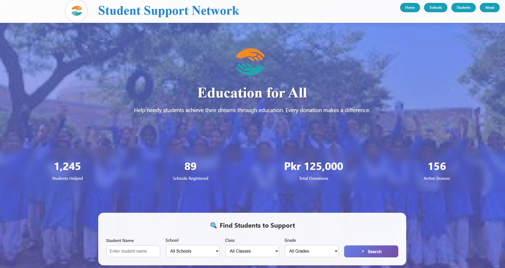
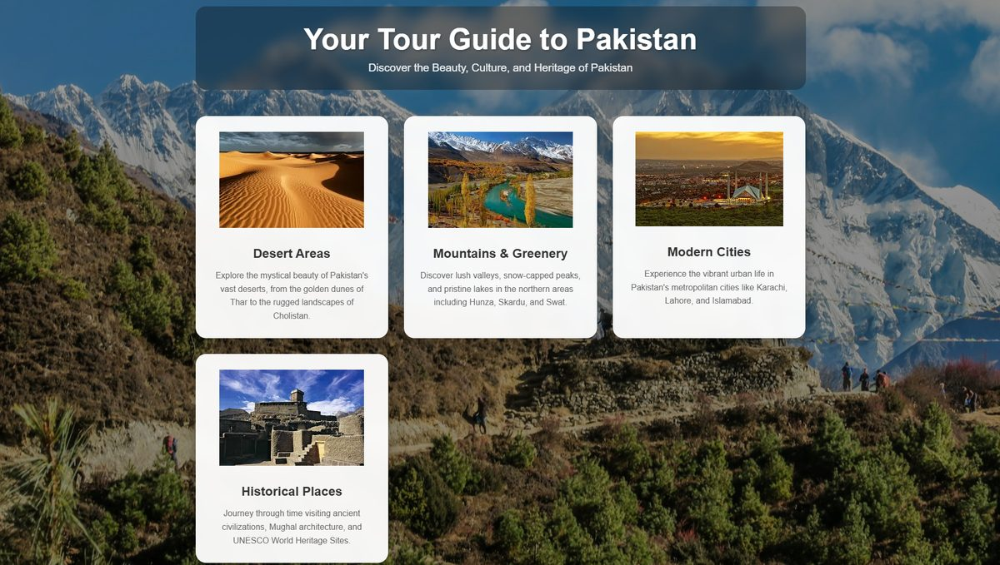
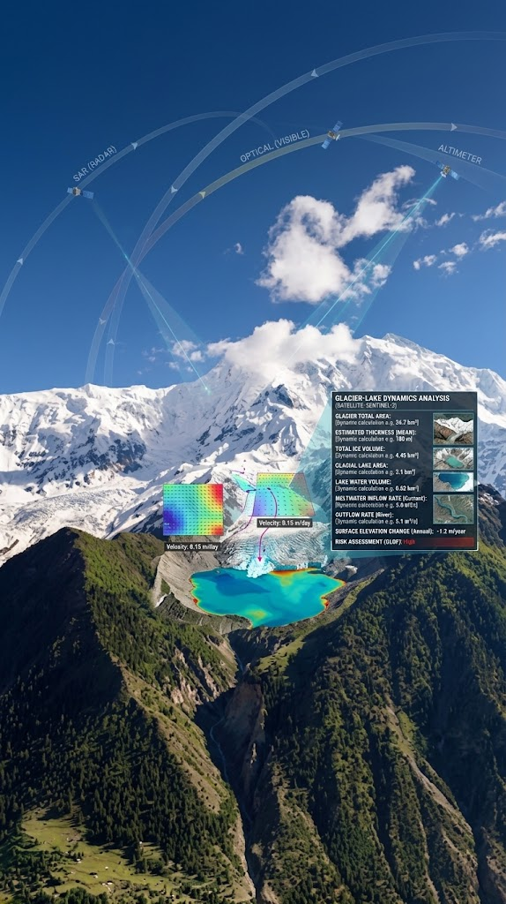

Student Support Network
A donation platform connecting donors with students who need support, with searchable listings by school, class, and grade, plus live stats on students helped and funds raised.
Final-year Software Engineering student building GlacioSentinel- a satellite remote-sensing platform that monitors glacier and glacial-lake changes in Northern Pakistan, turning Earth-observation data into early warnings for glacial lake outburst floods (GLOFs).

A donation platform connecting donors with students who need support, with searchable listings by school, class, and grade, plus live stats on students helped and funds raised.

A tourism guide showcasing Pakistan's deserts, mountains, cities, and historical sites, organized into browsable categories to help visitors plan where to go.

a satellite remote-sensing platform that monitors glacier and glacial-lake changes in Northern Pakistan, turning Earth-observation data into early warnings for glacial lake outburst floods (GLOFs).
I'm a final-year Software Engineering student at FAST National University of Computer and Emerging Sciences,with a focus on AI/ML. Most of my recent work centers on GlacioSentinel, a satellite remote-sensing platform I'm building with my team to track glacier and glacial-lake changes in Northern Pakistan. I'm drawn to problems where raw data can be turned into something people can actually act on an early warning, a clearer picture, a decision made easier.
Currently looking for full-time software engineering roles starting june,2027.
I'm currently open to full-time opportunities. Feel free to reach out!